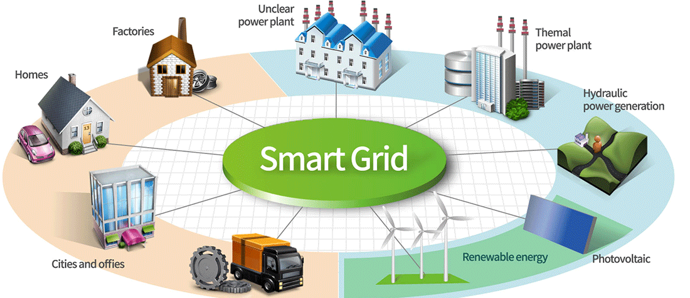
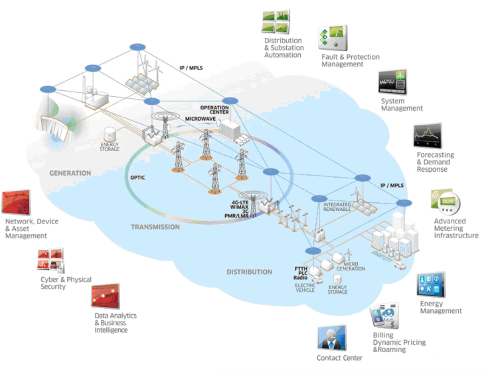
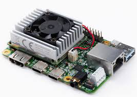
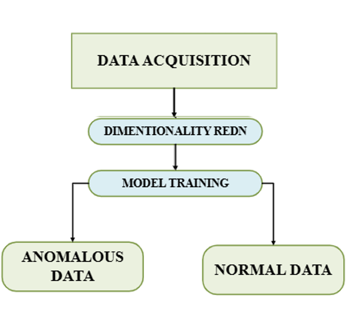

Smart Grids

SCADA Systems

Distributed Network Protocol (DNP3)

Google Coral Dev Board
Anomaly Detection

Team Member 1
CB.SC.U4AIE24117
Team Member 2
CB.SC.U4AIE24115
A smart grid is an electricity network that uses digital technologies to monitor and manage the flow of electricity. Smart grids use real-time data to balance the supply and demand of electricity, which helps to improve reliability and stability.
Smart grids utilize digital communication technologies to enable a two-way flow of electricity and data, enhancing overall efficiency and control. They incorporate advanced metering infrastructure (AMI) to monitor electricity usage, providing real-time insights into energy consumption.
Additionally, smart grids support the integration of various energy sources, including renewable energy, ensuring a more sustainable power system. Through grid automation and control, they optimize the generation, transmission, and distribution of electricity, improving overall performance.
The benefits of smart grids include improved reliability by ensuring a continuous energy supply, reduced costs through efficient resource management, and a better understanding of energy usage, enabling consumers to monitor and manage the energy they use, produce, and store effectively.
Smart grids are electricity networks that use digital technologies, sensors, and software to better match the supply and demand of electricity in real time while minimizing costs and maintaining the stability and reliability of the grid.
Supervisory Control and Data Acquisition (SCADA) systems are a key component of smart grids. They play a crucial role in managing modern power grids by collecting, analyzing, and controlling data from various grid components. These systems gather information from sensors and devices across the grid, including generators, transformers, and transmission lines, ensuring real-time monitoring of the power network.
Once the data is collected, SCADA systems analyze it to identify potential issues, detect inefficiencies, and optimize grid performance. This analysis helps in making informed decisions to enhance grid stability and efficiency. Based on the analyzed data, SCADA systems control the grid by adjusting voltages, optimizing energy distribution, and ensuring seamless power transmission.
SCADA systems contribute to efficient energy management by balancing energy demand and supply, reducing wastage, and improving grid reliability. SCADA also supports predictive maintenance by identifying equipment that requires servicing, preventing unexpected failures. Additionally, these systems enable self-healing capabilities, allowing the grid to automatically respond to power outages and other issues, thereby enhancing resilience. Overall, SCADA systems play a key role in creating smarter, more reliable, and efficient urban energy infrastructure.
Communication is a vital aspect of SCADA systems, as they rely on wired or wireless networks to transmit data between different components. This enables real-time coordination and enhances the grid’s responsiveness to changing conditions. DNP3 is one of the most preferred communication protocols of the SCADA systems.
In SCADA systems, DNP3 (Distributed Network Protocol 3) is a widely used communication protocol that enables data exchange between a central control station (master station) and remote devices like RTUs (Remote Terminal Units) and IEDs (Intelligent Electronic Devices), primarily used in industries like electric and water utilities to monitor and control field equipment within a SCADA network.
DNP3 facilitates the transmission of data acquisition information and control commands between the SCADA master station and remote devices, allowing for monitoring and manipulation of field equipment.
Primarily used in power grid management, water treatment plants, and other utility applications due to its reliability and efficiency in handling large volumes of data over potentially long distances.
As one of the most prevalent protocols in SCADA environments, while DNP3 assumes a pivotal role in ensuring operational efficiency and dependability, it is inherently susceptible to threats such as unauthorized access, replay attacks, and data modification. These vulnerabilities emphasize the urgent requirement for an architecture that integrates intrusion detection with privacy-protecting measures. Without such precautions, even a minor attack on DNP3 can severely compromise the integrity of SCADA systems, potentially resulting in catastrophic consequences for critical infrastructure.
The Google Coral Dev Board is a compact and powerful single-board computer designed for edge AI applications. It features the Edge TPU (Tensor Processing Unit), a specialized coprocessor optimized for executing machine learning models efficiently while consuming minimal power. This makes it an ideal choice for developers working on AI-driven embedded systems and IoT applications.
A Coral Dev Board enables real-time AI inferencing directly on the device, eliminating the need for cloud processing and reducing latency. This capability is essential for applications such as computer vision, anomaly detection, speech recognition, and natural language processing, where quick and accurate decision-making is required.
Unlike traditional processors (CPUs and GPUs), which require significant computational resources and power for machine learning workloads, the Edge TPU accelerates AI computations with low power consumption and high efficiency. This significantly enhances performance in embedded AI, robotics, automation, and real-time analytics, making it a preferred choice for AI research, prototyping, and deployment at the edge.
Anomaly detection refers to the identification of unusual patterns, anomalous events, or data points that deviate from expected behavior. In the proposed framework, all attack types are classified as a single, anomalous class, while the other, non-attack data is labeled as the normal class.
To simulate a real-world environment, the dataset used in this study is subjected to manual data augmentation, generating 1,398 normal traffic data points. Furthermore, varying levels of intrusion, approximately 1%, 3%, 5%, and 7% of anomalous data are introduced relative to the normal traffic, effectively mimicking realistic data flow patterns.
Dimensionality Reduction using Principal Component Analysis (PCA) is used for dimensionality reduction to project data into a lower-dimensional space and filter out less informative features while preserving the variance in the data.
Random Forest Classifier: Of all the machine learning classifiers (like SVM, Decision Trees, ANN, XGBoost, and Random Forest) tried out for anomaly detection for this dataset, Random Forest outperforms all others.